Top 10 Greatest rappers of all time
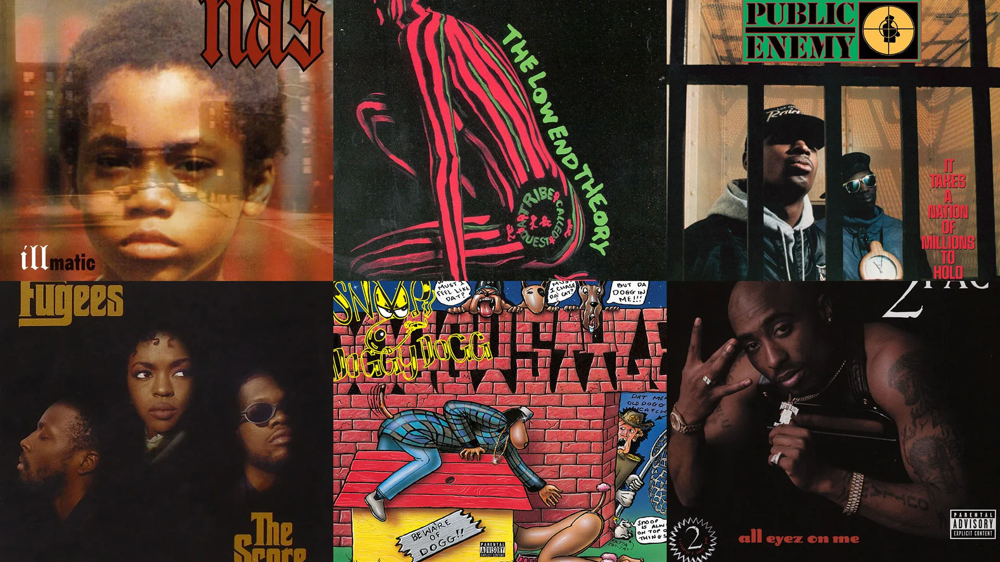10. Lauryn Hill, ‘The Miseducation of Lauryn Hill’ (1998)
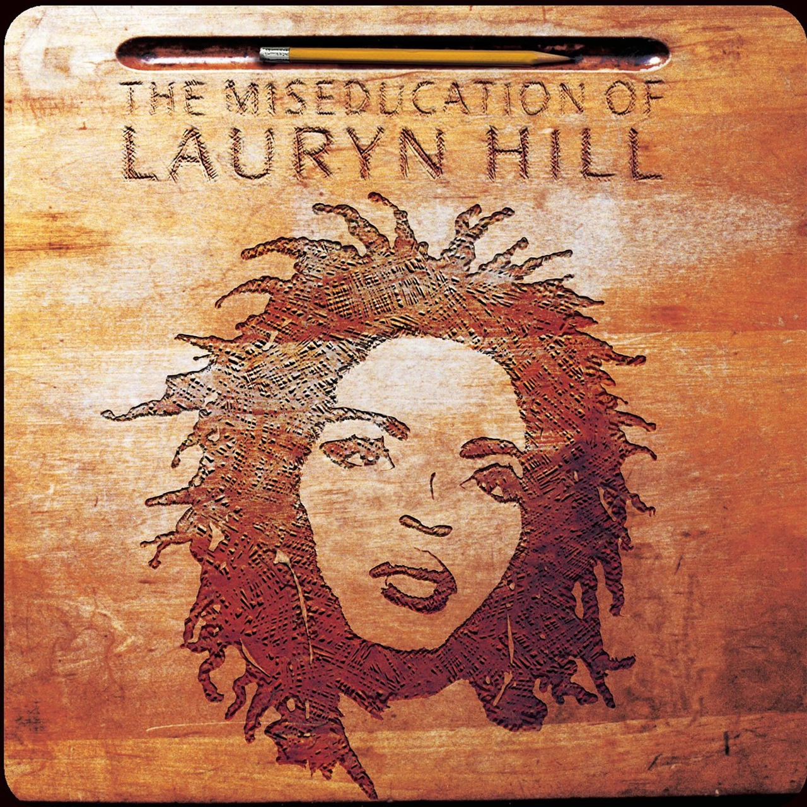Looking to express herself outside the hugely successful Fugees, 23-year-old Lauryn Hill came through with a feminist hip-hop-soul masterpiece on her 1998 debut. The opening one-two punch still stuns: The anthemic “Lost Ones” moves into the brutal breakup ballad “Ex-Factor.” The smash hit, “Doo Wop (That Thing)” is sandwiched between “To Zion,” an ode to her first child, and “Superstar,” a demand for more inspirational mass culture. At 77 minutes long, Miseducation spills over with brilliant (at times contradictory) insights, thrilling melodies, and plenty of moralizing — a righteous blockbuster that redefined every genre it touched. —J.G.
9. A Tribe Called Quest, ‘The Low End Theory’ (1991)
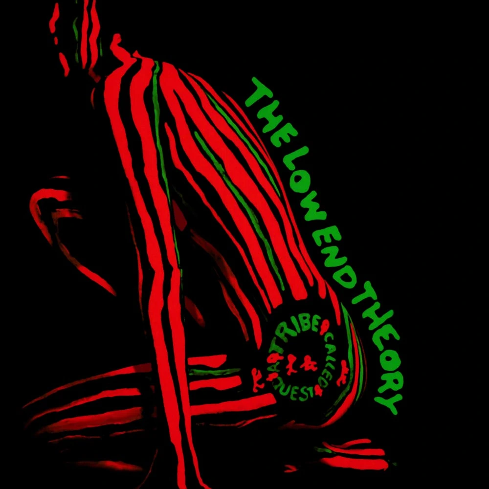The epithet “jazz rap” can’t come close to describing what Q-Tip, Phife, and Ali Shaheed Muhammad achieved on their second, classic LP. Though it samples session legends like Grant Green and Art Blakey, Tribe’s masterpiece is a whole multiculti mind state. Cool, eclectic, boho, and Black AF, it covered everything from anger management predicaments to the perils of date rape, and even gave us a random-ass number — 4080 — to sum up all that’s shady about the record industry. Tip’s husky, helium-toned couplets were a perfect match for Phife’s raspy everyman bravado. We still haven’t come down from The Low End Theory’s highs. —W.D.
8. Wu-Tang Clan, ‘Enter the Wu-Tang (36 Chambers)’ (1993)
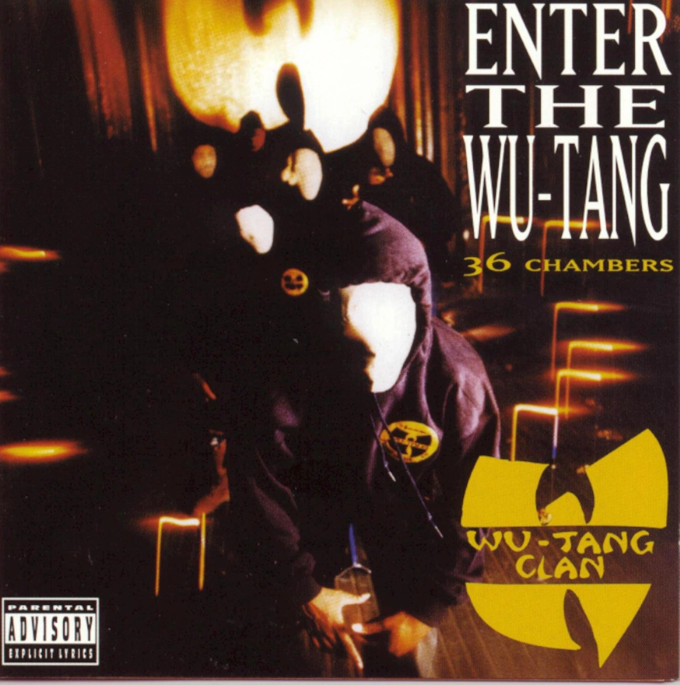A hip-hop legend so fantastical, it could only be the truth: Nine guys from New York’s outermost boroughs, steeped in Five Percent teachings and old kung-fu movies, crammed into one smoky studio for a lyrical battle royale that would reshape rap for the next decade. RZA’s sample collages set a new standard for hard-elbowed beats, and the Clan’s verses showed a stunning range of craftsmanship: the multisyllabic wisdom of U-God, the brainy arrogance of Inspectah Deck, the street-level insights of Raekwon, the crooked pop instincts of Method Man, the free-form wit of Ol’ Dirty Bastard, the keyed-up yelp of Ghostface Killah. The sheer density of slang-encrusted myth-making on Enter the Wu-Tang made an entire generation of MCs step up their lingo and laid the blueprint for outsized crews to come from Odd Future to Spillage Village and beyond. —S.V.L.
7. Missy Elliott, ‘Miss E… So Addictive’ (2001)
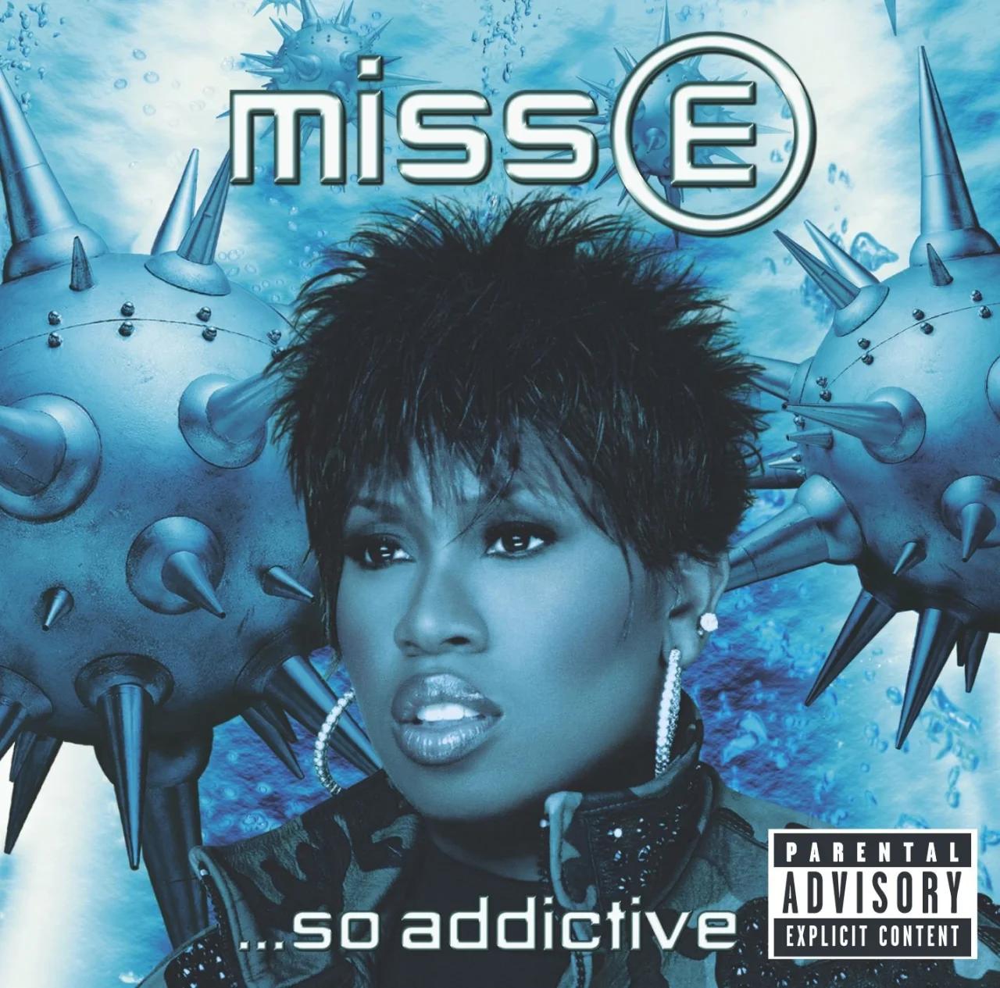Missy Elliott’s third album isn’t necessarily an advertisement for MDMA, although she chants, “This is for my ecstasy people” on “4 My People.” But it may be the most evocative reflection of an orgiastic moment when the hip-hop and R&B crowd discovered the delights of the club drug. The music is kinetic and sexually charged, and Elliott and longtime collaborator Timbaland craft some of their most unforgettable and innovative sounds. Everyone loves “Get Ur Freak On,” an instant classic where she spits party raps over a whirling, percussive dervish of drum and bass and Bollywood influences. Just as awesome is “Take Away,” which defines love as a “perfect match” greater than anything the jiggy era could offer. —M.R
6. Kanye West, ‘My Beautiful Dark Twisted Fantasy’ (2010)
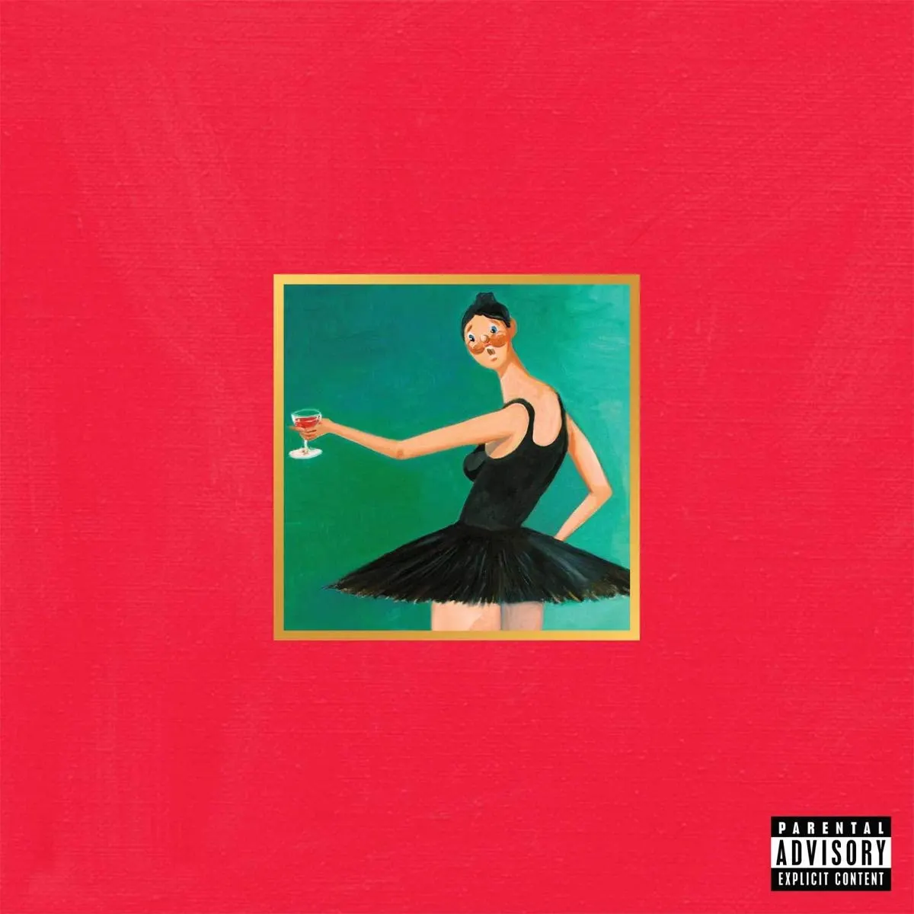Following the fallout from his infamous interruption of Taylor Swift’s VMA acceptance speech, Kanye West was fighting to win back the public’s favor. That fueled him to do something he hadn’t done before and maybe never will do again: exactly what we wanted him to. MBDTF is an upgraded amalgamation of everything that made us love Kanye: luxurious production, fluid features, and dexterous rapping over themes of grandeur, drugs, sex, and love. It combines the heartfelt vulnerability of The College Dropout, the orchestral soundscapes of Late Registration, the upscaled arena-raps of Graduation, and touches of the Auto-Tuned crooning of 808’s & Heartbreak. Kanye may think differently, but this album is a masterpiece. —M.C.
5. Kendrick Lamar, ‘To Pimp a Butterfly’ (2015)
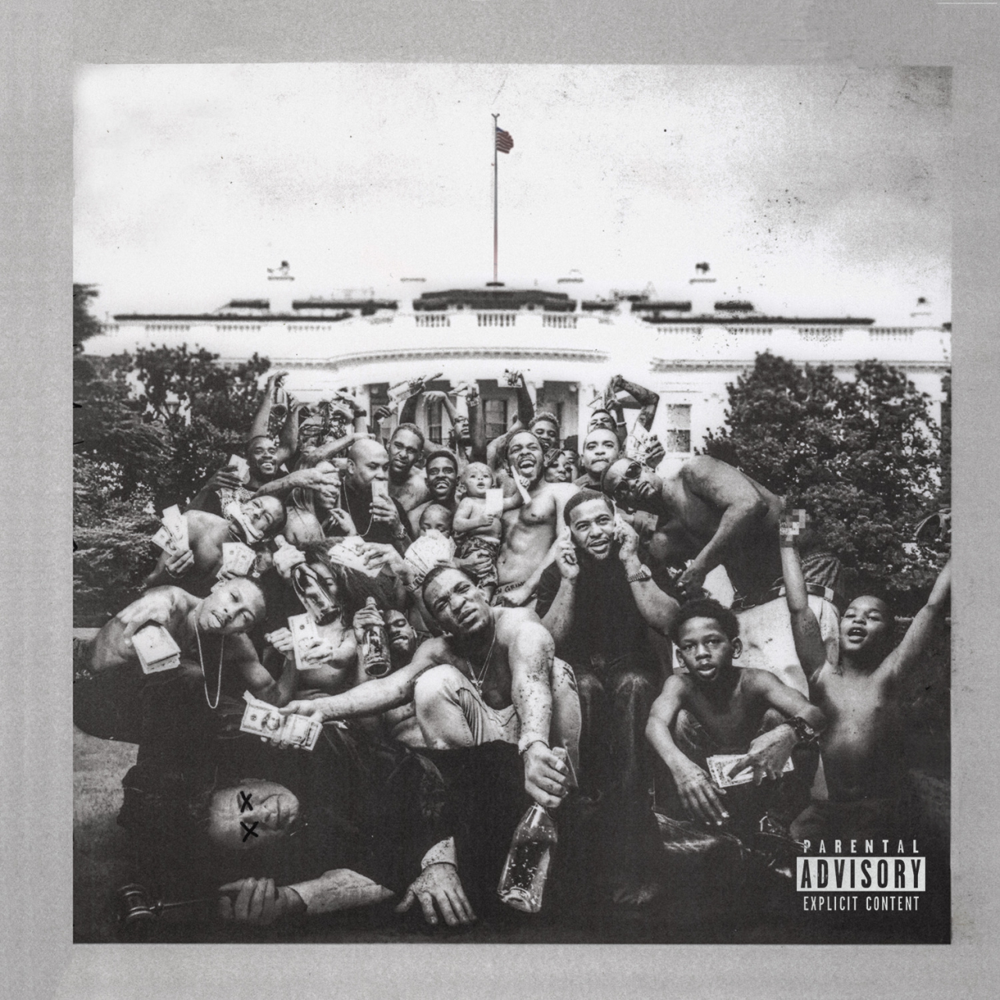With narrative development akin to a bestselling novel, Kendrick Lamar’s third album whisks us from Compton to South Africa and back again, with stirring meditations on everything from colorism to incarceration to wealth inequality along the way. Kendrick’s imagination here is deep and deft, as he dreams aloud of resilience, vengeance, and conversations with religious and rap deities. Both the sound and the words of Butterfly gracefully toe the line between diverse and disjunct with producers like Terrace Martin and Sounwave elevating Kendrick’s stories by bending jazz, soul, funk, and psychedelia into the shape of a hip-hop album. —M.C.
4. Public Enemy, ‘It Takes a Nation of Millions to Hold Us Back’ (1988)
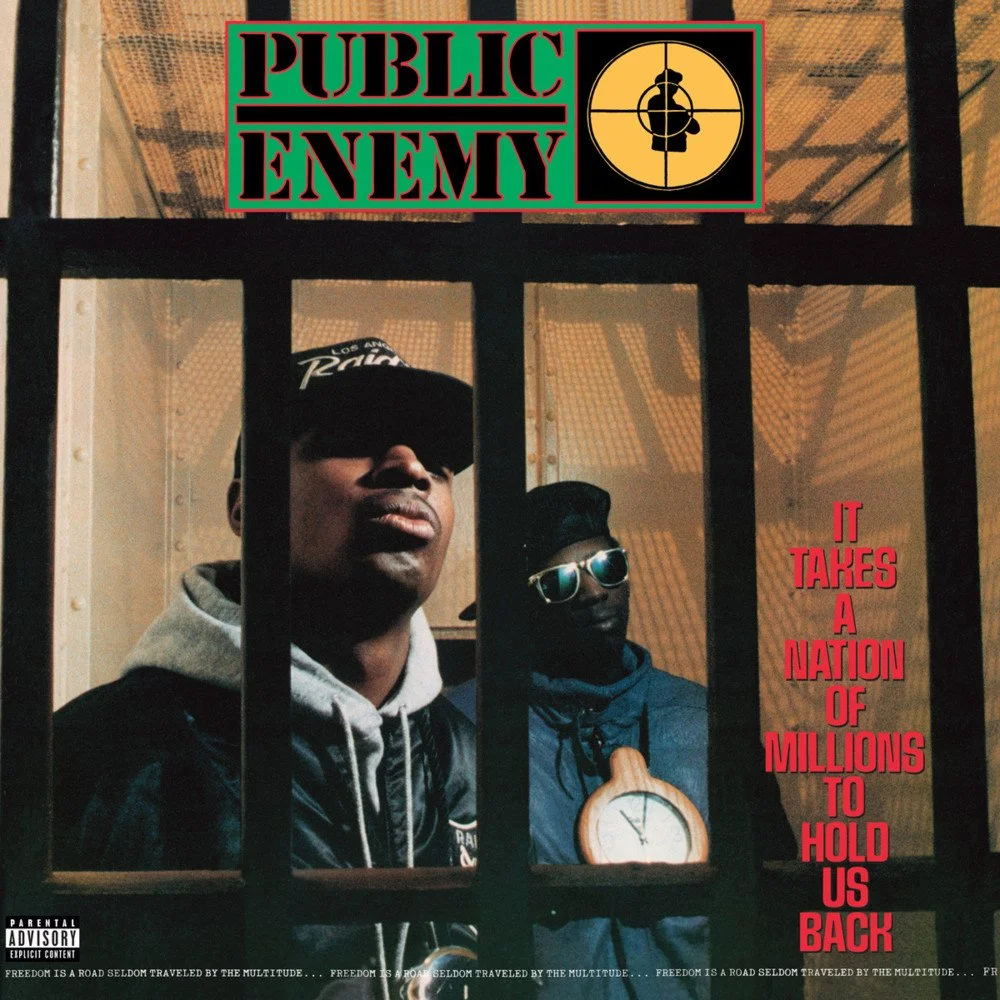The crowning achievement of rap’s greatest year, Nation of Millions was hip-hop’s first masterpiece. Musically, it was Sgt. Pepper’s; lyrically, it was London Calling, a radical mix of controlled chaos, righteous anger, dizzying scratch workouts, and samples that collided like a demolition derby. Chuck D led the prophets of rage with his instantly recognizable stentorian shout, taking aim at radio programmers, the prison-industrial complex, the media, the surveillance state, and addictions to both drugs and TV. The four-man Bomb Squad production team picked only the most caustic and noise-bringing samples. World’s-greatest-hype man Flavor Flav brought the undeniable spotlight-stealing star power that ultimately crossed generations. Louder than a bomb, its influence crossed genre lines from hip-hop to heavy metal to shoegaze and beyond. —C.W.
3. Jay-Z, ‘The Blueprint’ (2001)
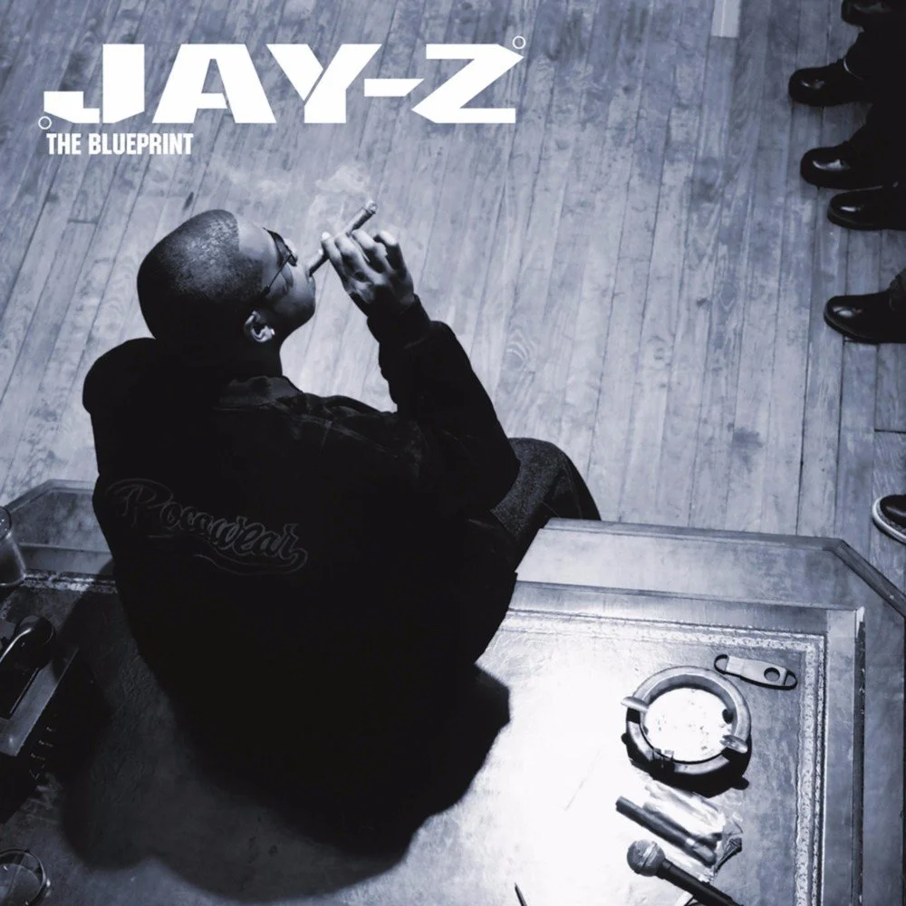After his landmark debut, Reasonable Doubt, Jay-Z spent much of the late Nineties fighting to prove he was a chart contender and a worthy heir to his late friend Biggie. By 2001, he could sit back and relax, flowing effortlessly over the choicest crop of throwback-soul beats he ever bought, from an ascendant Just Blaze and a new guy from Chicago named Kanye West. This is also the album where he aired out his grievances against Nas and Prodigy (the brash, Doors-sampling “Takeover”), but he gets that out of the way early, leaving the rest of the album clear for extra-clever boasts (“U Don’t Know,” “Izzo,” “Hola Hovito”) and some of the most emotionally direct writing of his career (“Song Cry,” “Heart of the City,” “Never Change”). Quick and witty, confident and smooth, he never sounded better. —S.V.L
2. Outkast, ‘Stankonia’ (2000)
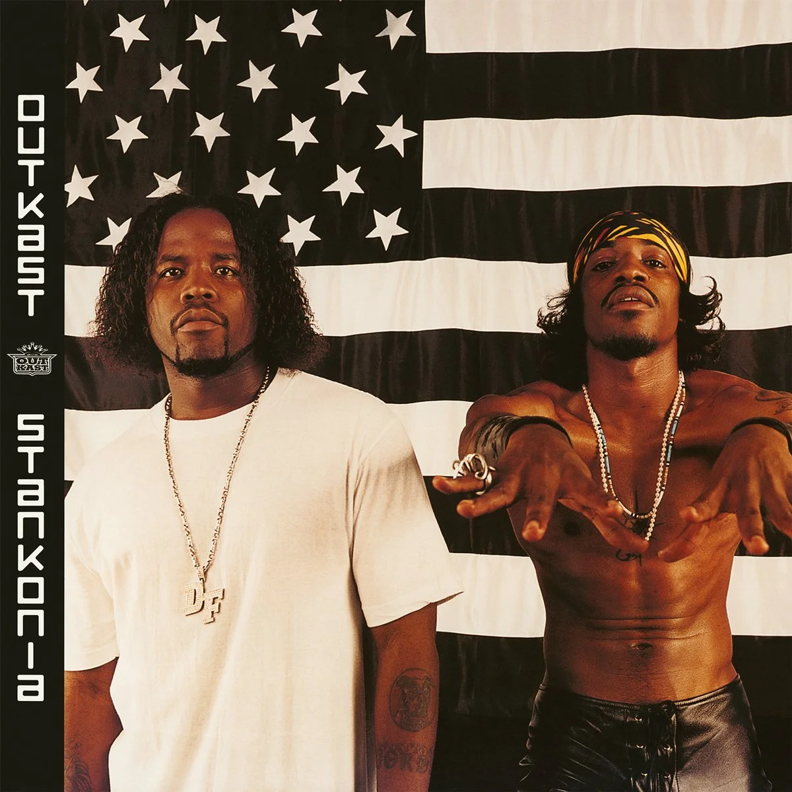By the turn of the millennium, Outkast were the standard bearers for Southern hip-hop, a regional form unfairly derided as less sophisticated than rap’s coastal variants. Stankonia finds harmony in the region’s myriad forms — booty bass and HBCU marching bands, protean crunk and trap, psychedelic P-funk and organic neo-soul. André 3000 and Big Boi, two of the best rappers of their generation, encompass the stylistic patchwork with panache, particularly on the hits “Ms. Jackson” and “B.O.B.” They really do sound “So Fresh, So Clean,” even as the “blue collar scholars” address hot-button topics like sex, abortion, and hypocrisy in American politics. “I met a critic, I made her shit her draws/She said she thought hip-hop was only guns and alcohol,” raps Andre on “Humble Mumble.” “I said, ‘Oh, hell naw/But yeah, it’s that, too/You can’t discriminate because you read a book or two.’” —M.R.
1. The Notorious B.I.G., ‘Ready to Die’ (1994)
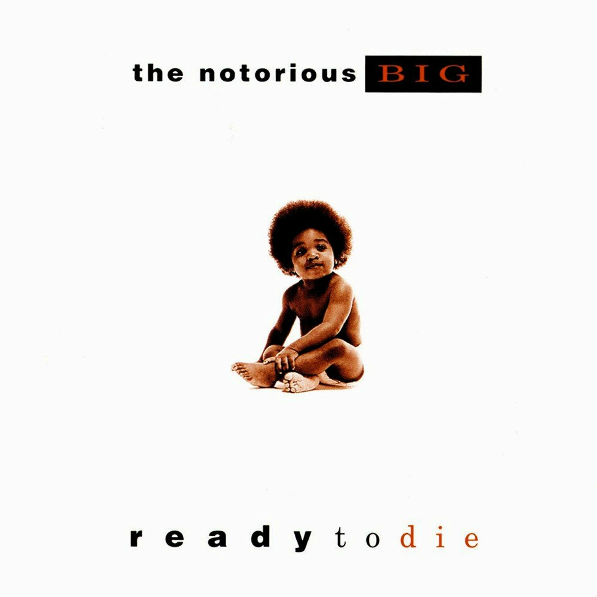Ready to Die marked the precise moment when hip-hop’s golden age transitioned into its modern age, the height of New York hip-hop, and the sound of the greatest rapper of all time at the absolute top of his powers. The album starts with the theater necessary for such a high-stakes debut. Before he became the Notorious B.I.G., Christopher Wallace had been hustling and selling drugs to make ends meet, experiences he poured into hard-hitting, semi-autobiographical songs after he signed with Uptown Records in 1992. When his A&R rep Sean “Puffy” Combs got fired, Wallace’s future looked uncertain — but that all changed once Ready to Die was released on Combs’ Bad Boy Records in 1994. Biggie leavened his raw fatalism with a smooth, subtle sense of humor, perfecting a hard-soft dichotomy that would become a template for decades of artists. From the grandiose cinema of the four skits on “Intro” to the triumph of “Juicy” to the bleak honesty of “Suicidal Thoughts,” the album remains a grim, groundbreaking classic that stared death in the eye and became larger than life. —J.L.